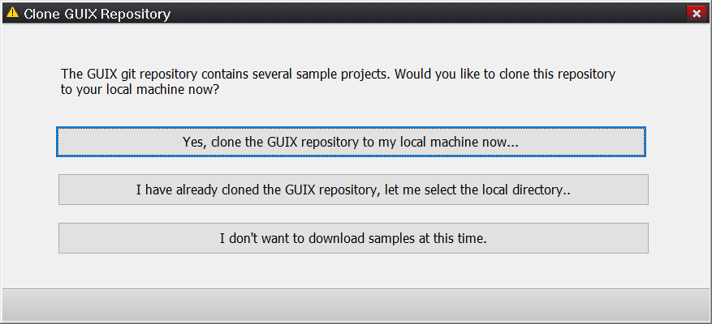
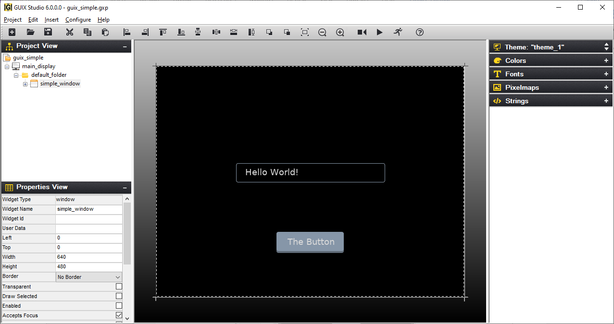

Chapter 2: Installation and Use of GUIX Studio
This chapter contains a description of various issues related to installation, setup, and usage of the GUIX Studio UI system design tool.
Product Distribution
You can obtain the GUIX Studio app from the Microsoft App Store by searching for GUIX Studio. Then do the following.
-
From the GUIX Studio page in the App Store, click the Get or Install button to download GUIX Studio.
-
Your browser may display a message asking if you want to open the App Store. If it does, choose the Open button.
-
When the install finishes, choose the Launch button.
-
The first time that GUIX Studio launches, it displays a dialog box asking if you want to clone the GUIX repo to your local computer. You can either choose to clone the repository, point to where you have already cloned the repo, or choose not to clone the repo at all (in which case, one example project is installed on your computer).

You can return to this dialog box at any time by choosing Configure from the main menu of GUIX Studio, followed by GUIX Repository.
After the startup process is finished, you will be ready to use GUIX Studio.
Using GUIX Studio
Using GUIX Studio is easy - simply run GUIX Studio via the "Start" button. At this point you will observe the GUIX Studio UI. You are now ready to use GUIX Studio to graphically create your embedded UI. From here you create a new project or open an existing project, including the GUIX example projects.
| You can also double-click on any GUIX Studio project file with an extension of "gxp," which will automatically launch GUIX Studio and open the referenced project. |
GUIX Studio Project Samples
A series of example GUIX Studio project files with the extension "gxp" are found in the "Samples" sub-directory of your installation. These pre-built example projects will help you get comfortable with using GUIX Studio.
One example project file that is always present is the file samples/demo_guix_simple/guix_simple.gxp. This example project file shows the definition of a simple GUIX UI, as described in Chapter 7 of this document.

Figure 1